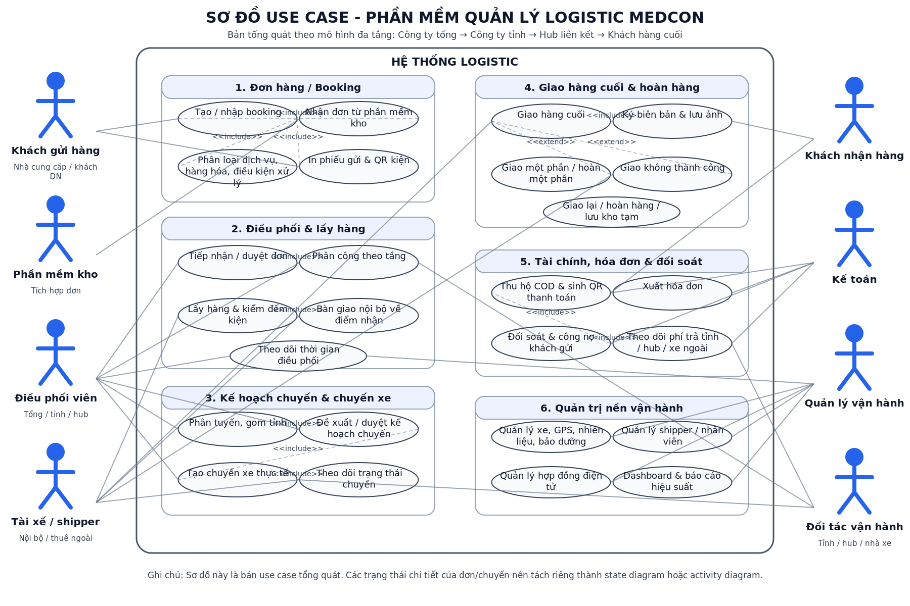
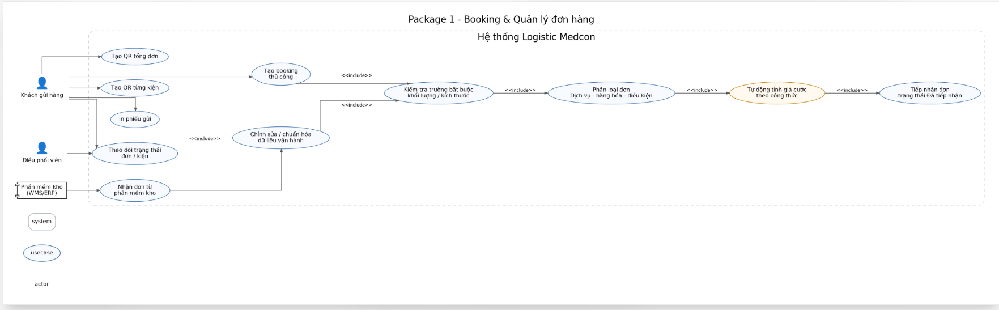
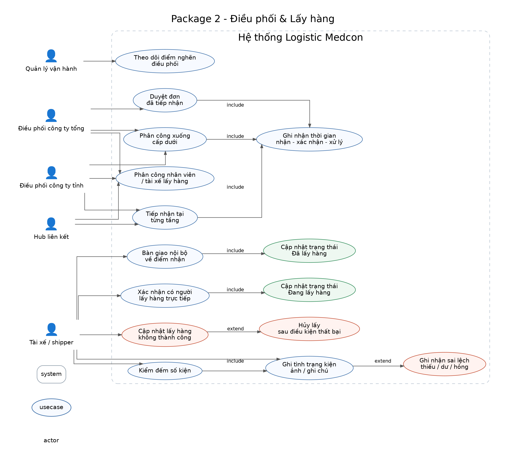
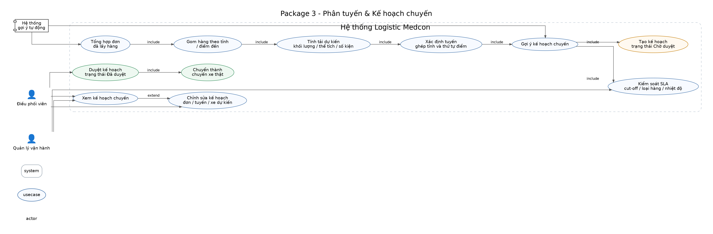
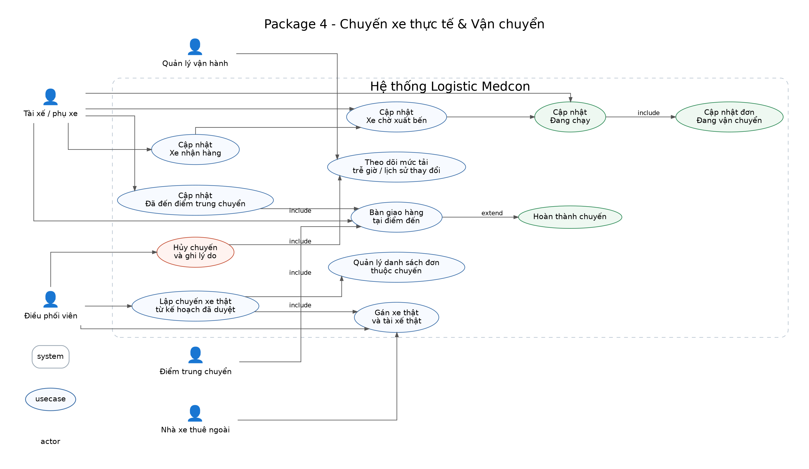
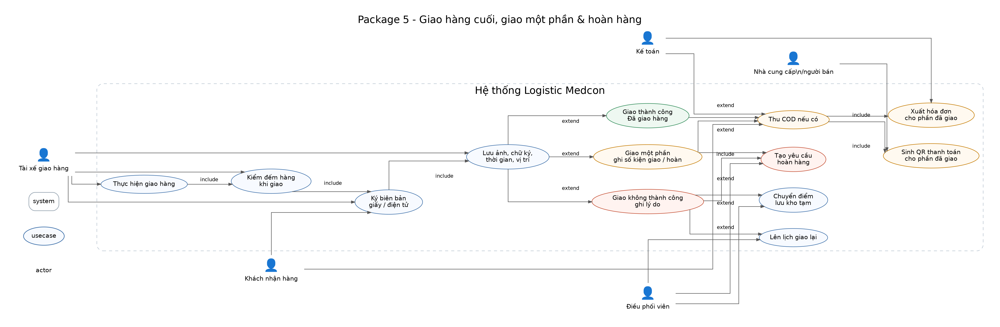
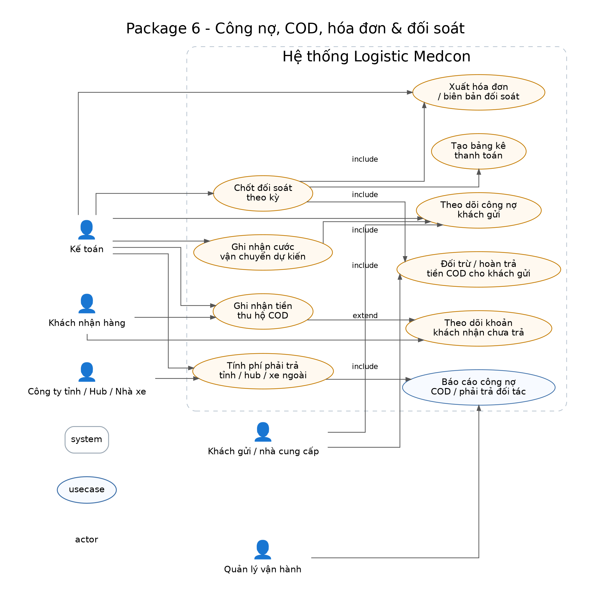
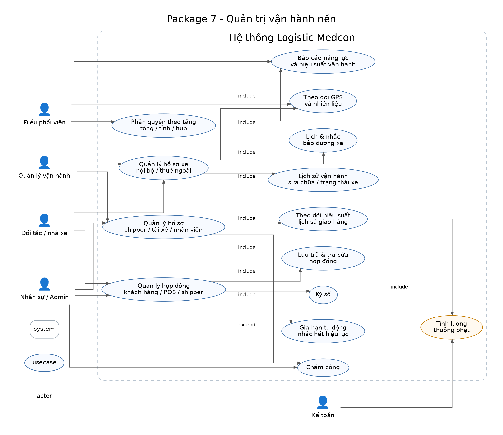

Khách gửi Hệ thống Điều phối Tài xế
| | | |
|---Tạo đơn----->| | |
| |--validate----->| |
| | | |
| |--tính cước--->(internal) |
| | | |
| |--Đã tiếp nhận->| |
| | | |
| |<--duyệt đơn----| |
| | | |
| |<--phân công----| |
| |--------------->| |
| | |--giao việc-->|
| | | |
| | |<--confirm----|
| | | |
| |<-----Đang lấy hàng------------|
| | | |
| | |--lấy hàng--> |
| | | |
| |<----update số kiện + ảnh------|
| | | |
| |--Đã lấy hàng----------------->|
Điều phối Hệ thống Tài xế / Đối tác
| | |
|---xem đơn----->| |
| | |
|---phân tuyến--->| |
| |--gom dữ liệu------->|
| | |
| |--đề xuất kế hoạch--|
|<---------------| |
| | |
|---chỉnh sửa--->| |
| | |
|---duyệt------->| |
| | |
| |--tạo chuyến xe---->|
| | |
| |--gán xe/tài xế---->|
| | |
| |<--confirm----------|
| | |
| |--Xe nhận hàng------|
| |--Xe xuất bến-------|
| |--Đang chạy---------|
Tài xế Hệ thống Khách nhận Kế toán | | | | |---đi giao--->| | | | | | | |---kiểm đếm-->| | | | | | | |---ký nhận------------------->| | | | | |<--xác nhận-------------------| | | | | |---update kết quả------------>| | | | | | |--tính COD---->| | |--tạo QR------->| | | |---thanh toán->| | | | | | |--ghi nhận COD--------------->| | | | | | |--xuất hóa đơn--------------->| | | | | | |--cập nhật công nợ----------->| Nhánh mở rộng: - Giao một phần: giao 3/5 kiện -> 2 kiện hoàn, COD chỉ tính cho 3 kiện - Giao thất bại: chọn lý do -> tạo task giao lại / hoàn hàng
Hệ thống Kế toán Khách gửi Đối tác | | | | |--tổng hợp---->| | | | | | | | |--xem báo cáo->| | | | | | | |--xuất hóa đơn--------------->| | | | | | |--đối soát COD--------------->| | | | | | |--thanh toán----------------->|







Khách gửi tạo đơn hoặc đẩy đơn từ kho. Hệ thống logistic là nguồn sự thật cuối cùng và chuẩn hóa dữ liệu đầu vào.
Đơn ở trạng thái Đã tiếp nhận, được phân công theo từng tầng mà không can thiệp chéo quyền.
Ghi nhận số kiện, tình trạng kiện, ảnh hiện trạng và chênh lệch so với booking.
Hệ thống gợi ý theo tải, tỉnh, tuyến và cut-off time. Điều phối viên chỉ kiểm tra và chốt.
Xe nhận hàng, chờ xuất bến, đang chạy và bàn giao tại các điểm trung chuyển hoặc điểm nhận kế tiếp.
Ký biên bản, ký số trên app, sinh QR thanh toán, xuất hóa đơn và ghi nhận kết quả giao.
Theo dõi cước, COD, đối tác, xe, shipper, hợp đồng điện tử, bảo dưỡng, GPS và tính lương.